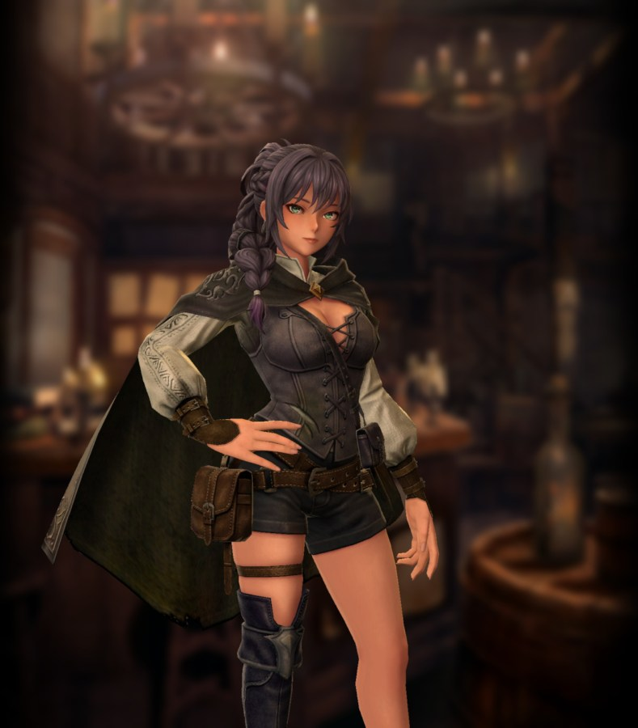

Linaria 
{kind=link}
Basic Info
Rarity: Legendary
Race: Human
Gender: Female
Type: Dark
Personality: Evil
Bondmate Trait: ?
Starting Class: Thief
Base Traits
| Strength | IQ | Piety | Vitality | Dexterity | Speed | Luck |
|---|---|---|---|---|---|---|
| 11 | 14 | 12 | 11 | 12 | 14 | 13 |
Skills
Inheritable Skill
Increases damage dealt by adjacent allies for 3 turns. Damage increase amount and number of turns are reduced if learned by someone other than Linaria. Damage increase amount and number of turns increased based on skill level.
Unique Skill (Not Inheritable)
After using a non-attack buff or debuff skill, there is a chance that the user can perform another action. During an encore, the user can take an action other than using the skill used immediately prior, but encores will not trigger consecutively. The trigger probability decreases based on the number of times an encore has occurred during the battle.
Discipline Skill
Continuously increases each stat, with SP and Action Speed increased further. SP and Action Speed increased further based on skill level.
Class-learned Skills List
| Level | Name | Type | Restriction |
|---|---|---|---|
| 1 | Treasure Trap Detection Skill | Passive | |
| 3 | Precision Strike | Active | |
| 3 | Treasure Trap Disarm Skill | Passive | |
| 5 | Passive Evade Trap Up (Thief) | Passive | |
| 6 | Delay Attack | Active | |
| 9 | Hiding | Active | Thief-specific |
| 11 | Passive Evasion Up (Thief) | Passive | |
| 13 | Passive Surety Up (Thief) | Passive | |
| 15 | Stealth | Passive | |
| 17 | Passive Action Speed Up (Thief) | Passive | |
| 20 | Blinding | Active | |
| 23 | Poison Attack | Active | |
| 25 | Way of the Thief | Passive | |
| 27 | Glue Bomb | Active | |
| 30 | Sneak Attack | Active | Thief-specific |
| 32 | Cunning Pursuit | Passive | |
| 35 | Passive Detection Up (Thief) | Passive | |
| 51 | Blood Edge | Active | |
| 54 | Trap Disarm Master's Resolve | Passive | Thief-specific |
| 61 | Nose for Wealth | Passive | Thief-specific |
| 63 | Treasure Master | Passive | Thief-specific |
| 65 | Poison Berry | Active | |
| 68 | Exploit Weakness | Active | Thief-specific |
| 70 | Calm Mind Technique | Passive | Thief-specific |
Adventurer Reviews
TheAxolotl's Analysis
One thing I've really been pleased with about this game is that the devs do a great job of releasing strong and/or unique adventurers without making them game-breakingly broken. Linaria is a good example of this - many initial reactions were that she's very overpowered, but that's not really the case, and whether or not you use her is ultimately going to boil down to what you want in your party. Let's look at her skills!
First, Riotous Ballad is her buff, and it's quite solid. First and foremost, it's a true damage buff and not an attack power buff, so this has the benefit of boosting magic damage as well as physical damage. While most parties don't run with heavy magic damage, there are some exceptions out there and this will become even more valuable if magic damage ever gets a rework by the devs. As with most buffs, this is not a flat percentage multiplier - there's a multiplicative as well as an additive component. Early testing shows that at skill level 1 on Linaria herself, the buff is somewhere in the order of a 10% increase plus a flat 45ish damage. Inheriting the skill seems to reduce the flat component more than the percentage component, but it's a bit tough to say for sure and will need some more testing to iron out.
As far as practical application, Riotous Ballad will generally perform better for lower attack power, multiple hit weapons than it will for high attack power, single hit weapons, just due to the flat portion of the boost being more noticeable at lower power levels. One important thing to note is that Riotous Ballad does not buff a single row - rather, it buffs the two adventurers on either side of the user plus the adventurer in front or behind the user. For optimal positioning, this means you want Linaria to be placed in either the front or rear middle party slot. As an example, if I were to run her in my party, I could position her as follows:
Shiou - Linaria - Rinne
MC - Yuzu - Sheli
This would enable Shiou, Rinne, and Yuzu to all receive a damage boost. The fact that the buff does not care about alignment is pretty great, and makes it comparable to the Prayer of Rebellion value. Speaking of PoR, it does stack, but it also takes up a standard buff slot, so you'll have to keep an eye on your buffs so you don't accidentally knock off something important.
Her next skill, Encore, appears to be roughly a 50% change to trigger during the first turn. A key thing to note here is that Encore will only trigger on skills. This means that inheriting something like PORTO to her and doing PORTO -> Encore -> Riotous Ballad is not possible. However, it does allow for something like Riotous Ballad -> Hiding.
As far as Discipline goes, she gets ASPD and SP as her featured stats, which does lean into her support-heavy focus.
One of the big downsides to her kit is that she's a Thief class, which generally performs on the weaker side in combat these days. Her Encore skill does open up some interesting potential with class changes, but it's hard to say what value that will have at the moment.
One neat thing is that in camp, she does play her lute and provide some music, which is a nice little aesthetic touch!
Shiro's Analysis
So as people expected we got thief with lute… I want to praise devs on start for visual design and the audio coming along with this character. It surely is a really nice add-on to the game and will be highly appreciated by some people.
But now going to the practical part of the review, she’s dark element which is IMO the best option for thieves (LUCK and IQ growth), followed by the human race, so nice luck growth on top of the dark element already supporting it, which means solid stats for chest opening.
Her passive is kind of nice… but I’m not that big fan of heavy RNG in fights so I’m not losing my mind over it and I find it whatever… unless she’ll get knight later on which can be a really interesting option.
Her discipline is ASPD and SP which push her more into the support side which is something I’m really happy about too, Devs did know what to do with it this time.
Okay I’ll go into more details in inheritance now. This inheritance doesn’t buff strictly ATK/MAG or other stats. It’s ALL DMG Up ability, which means it’ll boost spells which scales with mag, pure ATK scaling skills, mixed scaling like samurai/ranger or guardian blow. It buffs DMG of ANYTHING. This skill also buffs 3 people, so I’ll compare other 3 people buffs. So far those are: Prayer of Rebellion, Stirring Righteousness/Valiant Righteousness and Agent of Heresy. So I’m referring to them because ALL of them are 3 person buffs unlike single target buffs like Shedding/Warrior Battlecry/Mental Unity.
Now to compare:
Prayer of Rebellion: ROW buff, ATK Up only, ACTIVE, no personality required. Effectiveness bound to use on Fighter/Thief/Ninja. Stirring Righteousness: ROW buff, ALL DMG Up, Good/Neutral personality, PASSIVE Agent of Heresy: ROW buff, ALL DMG Up, Evil/Neutral personality, PASSIVE Riotous Ballad: Adjacent buff, ALL DMG Up, ACTIVE, no personality required.
Now let’s go with the issues with all of them. Prayer is not effective on Ranger, doesn’t work for Guardian Blow or mages and is not fully effective on samurai. Also it’s ROW buff so forces ROW with 3 DMG for maximum efficiency of usage. Stirring Righteousness forces you to have only Good/Neutral personality in ROW and 3 DMG for full efficiency, similar to Agent of Heresy forces 2 ROW DMG because one slot of buff goes to Alice already. That’s where Riotous Ballad shines compared to other options with flexibility. While you need her in the middle BACK/FRONT for maximum use it has no strict personality requirements and it doesn’t force ROW full of DMG characters to be efficient, with the downside of it being an ACTIVE skill.
What does it mean? Let’s go with examples, you can use Yuzu in the backlane with Linaria in front along with 2 other DMG so you buff 3 DMG characters in that way. Or you double down on Yuzu to push her to your main DMG and throw Linaria with Alice in the back and front DMG like Shiou or samurai MC to buff 2 hyper-carry DMG dealers. The most important part is that the skill doesn’t buff Linaria which is great. From the beginning we already saw that thieves play more of a unity/support/sup-DPS role so it’s more optimal to use them as controllers/debuffers/status appliers rather than DMG. What am I trying to say? I’m saying that Linaria not buffing herself but other 3 characters is better than the case where she would buff herself and 2 other characters. Thieves do well as a supportive class rather than your main DMG sources. Looking further into the example of hard content we finally have – Dwarves Cave it seems that the optimal way later on will be focusing on buffing one or two DPS while supporting them rather than focusing on a full DPS team for harder content. Which means that thieves played as supports will shine more on hard content while for easier one you can just use fighter with spear/bow for more effective damage per turn.
Overall in my opinion the new character is really good with the main selling point being her inheritance. Her being a thief is even better because she can reach high ASPD and have better rotations. And in my opinion thieves are better as controllers and sub-dps or full supports with main selling point being delay and all kind of status/debuff skills supporting your main DPS over thieves doing DMG themselves, which Linaria leans towards, so while I wouldn’t pull for her or go crazy over her I’m really happy that developers know what they are doing.
Karkarov's Analysis
We are back in 2024 baby! We have a new legendary and they are evil alignment and dark element! Drecom is back to their favorite combo! Jokes aside, what is the story on Linaria the thief?
Well she is a female, dark element, evil, thief as stated. So immediately we have some conclusions, 1: she does not work well on the front line. Not only because she does not play well with the Lana buff, but she is in fact a thief too. As a class thief does best on the back row with a bow. 2: the synergy is very hit or miss. Dark element doesn't really do anything good for thief. Female characters get a speed buff, but no strength or dex. If her class had been mage this would have been a very solid set up though, priest would have been ok too. That said she clearly does fine on the back row so works with the Alice buffs, and can stand beside Yuzu which does matter in this case and we will get to that later.
To round it out her discipline is speed and SP which is pretty solid, not blowing the doors off but could have been a lot worse. A good discipline for a support oriented character and that is what Linaria really is..... insert record scratch here as now we see the elephant in the room. Thief (unless you count opening boxes and increasing money drops in auto farms) basically has no support skills, but she is clearly designed as a support character.
So to understand why she is designed to actually be a support we have to look at her unique skill, and her passive inherit skill. First lets talk about the inherit skill Riotous Ballad.
Ballad is a damage buff skill (this is important, skills use sp etc etc) that effects the person in front/behind of Linaria, and anyone to her right or left. This means it can impact up to 3 characters, but not 3 characters in a row, and not Linaria herself. It is a true support skill as it does nothing for our actual skill user. So how good of a damage buff is it? Is it 30%? That's what that japanese clickbait video said Kark! 90% at level 7 baby ahahahahahahahaha~~???!!!!! No. It is not 30%. It is not 20%. I am not even totally sure it is 10%.
I am still doing data gathering and working on trying to sus it out in a meaningful way. There is a chinese player who did some real study on it and suggested it is 40 flat bonus + 9%, but when this is applied to some of my data it doesn't hold water, though this is closer than anything else I have seen thrown around on reddit or discords. Here is a LINK to the site if anyone wants to look at the data themselves, bear in mind it is in chinese.
So you did testing, you are saying the early numbers were massibely overblown and wrong, thats great, whats the point? Ok, so as I mentioned I am not sure of the exact formula yet it needs more testing. What I can say 100% for sure is that Ballad is not a flat % gain. It is some degree of + static value and + percent. Most likely the % is actually fairly low, probably 10% or less. I am suspecting it is probably like a 25-75 or 40-60 (flat / percent) split where a good chunk of the extra damage is coming from a flat value.
Testing by some discord users (thanks Gagging and Topbird) and testing in the trial battle STRONGLY suggest leveling the skill past 3 does mostly nothing, and most of the bonus you get from leveling the skill is a flat + value, not a percent increase. So leveling the skill very far is also not a great idea.
What does that mean OMG~!!!?!?!?!?
It means Ballad is kind of like a newb trap skill. At low level, in early content, that flat bonus is doing a lot of lifting and results in these numbers that make people mistakenly believe it is a 30'ish% increase. Because a large portion of the bonus comes from a flat number though.... this means the bonus gets less, and less, and less impressive the further you get in the game. In my testing I was seeing bonus damage on level Ballad 1 as low as +130 damage on average. For a level 70 character in abyss 4 130 damage is not rustling any jimmies.
Now this is a per hit increase though so of course we have to throw a bone and go back to what I said earlier... it is really good if she is standing beside Yuzu. Cause again, per hit, large portion is a flat bonus = favors multi hit attacks. Aka - huehuehuehuehuehue. This also means for this skill to really be a meaningful value add you basically have to pair her with a hue user that has a hairpin. Thanks Drecom.
Even then, it is really only benefitting one character that is already not having any damage problems to begin with. In fact I doubt you get more damage on hairpin hue from this than you would if you just used a spear fighter instead and did say splitter level 3 or poised once. In short the value of this skill is not what it first seemed and it is kind of a big "so what?" Unless of course you are a whale with 3 hairpins and 3 ninja who have hue 3 or better. In that case it's slobberin time boys pull pull pull, it isn't like your money is a limited resource anyway.
Oh and PS, testing by others suggests it's effectiveness is at least 40% lower total bonus as an inherit than on Linaria herself... so if I am saying it isn't that impressive on the actual character you can be sure it isn't winning any awards as an inherit. Prayer of Rebellion is simply a better damage buff, more readily available (adventurer bones II), and easier to use.
Ok so Ballad is not looking as great as it seemed in the first clickbait vidoes (shocking) and it scales poorly as you progress through the game. What about Encore?
Encore in my opinion was always the lynch pin skill of this character and was extremely interesting on paper. If it worked like a quick glance suggested this character would be VERY strong as a support, like, possibly the best in the game. Too bad it doesn't work like a first glance suggested.
So Encore does have some good things going for it. First what does it do?
It is a passive that on a leveled Linaria (lets say 50 or higher) has a proc rate of give or take 50%, and when it procs Linaria gets an immediate free turn. At lower level (20 or lower) I found the proc rate was more 25'ish%, but that isn't really important as it improves long term assuming I didn't just have a terrible luck run. How do you proc it? Easy, it may proc when using a skill that buffs or debuffs, the skill cannot do any damage not even 1 point. It can even proc more than once in one round (theoretically) but my testing suggested the proc rate of twice in one round was so low we may as well just say it is 10% or lower. I never saw it proc 3 times in one round though the skill implies it can. Yes I inherited enough skills to try for that.
So clearly something is wrong right, you give that impression? Yeah quite a bit actually.
First it comes down to "it may proc when using a skill that buffs or debuffs...". So not when you use an item. Not when you use a spell. Not when you do ANYTHING that might result in the enemy taking any form of damage. With this in hand you realize... the list of things that can proc this skill is extremely small. Not only that, thief only has 1 native skill that can actually proc this ability, the mostly useless at this point in the game "Hiding". Couple this with the fact that you cannot repeat actions and most skills that coupld proc this either can't be inherited or are class restricted and you will have a hard time finding skills worth using to proc it at all.
Right now the only options to inherit that Linaria can actually use and proc this skill are Warrior's Battle Cry, Self Healing, Defensive Provoke (you want your thief on the front line using a dagger right?), Black Beast Feint (keep pulling aggro on your thief), and Lingering Blossom (put enough aggro on your thief yet? Meanwhile def worth sacking a Shiou for this). I guess the Gerard alt "Requietal by Blade" MIGHT work to proc it too, but I am not going to test that and you shouldn't either.
So it is a 50/50 if it even procs, even if you have a second skill to use that could proc it the rate of double proc is extremely low, and other than her own skill Ballad there really is no great skill to use to proc it. Battle Cry is ok since she should be back row and eventually you will actually attack I guess? If she had ninja it would be great with shedding, dissipation, or voice theft. Even as a mage she could have luck fished with a mental unity into an attack spell. But she is a theif, so nah, you buff with Ballad, maybe proc it, then you ... hope to have inherited something worth doing for your free turn?
If you aren't seeing the problem it is pretty simple.
While Ballad is ok, it isn't actually anything special due to poor scaling and due to it being "adjacent" allies is kind of clunky to use. Meanwhile you wont use Ballad every round regardless since it can't be "targetted" so you wont have it for proccing Encore a good amount of the time anyway. So the usefulness of Ballad is so so, Encore is too limited in what can proc it, and as a thief she is highly reliant on large amounts of very limited inhertis to have good attack options. For example wide volley, moment of finality, decisive torso strike, challenger strike, etc. Hell she is highly reliant on inherits just to have something worth using to proc Encore at all other than Ballad.
I apologize for this write up being so long, but I did do hours and hours of testing and I really did want to find an excuse to like this character. The design aesthetics are fantastic both in visuals, her personality, and the great voice work in english and japanese. Her playing the lute in camp and tavern is such a nice touch and great bit of character flair.
But her two skills bounce between being ok but nothing special, and extremely limited in how they can even be used. Ultimately she is held back by her class.
In the end TLDR: As of 3/28/26 I can't recommend you pull this character for anything other than her visual and audio design. She is the wrong class for her support oriented design intent, this results in poor synergy as a character, and makes it hard to justify fitting her into an existing team. She needs too many inherits to really get cooking, and many of the ones I would recommend are even highly limited and hard to get. Ballad as an inherit is not good enough to really consider spending resources on either unless you just have them to burn.
Just like Raffaello she is a "wait and see" character where the value won't really be clear until her second class is revelead. Lets hope that when that reveal happens, unlike with Raffaello, the second class actually is a good fit for her as a character.
Worse's Analysis
Hello everyone, first time reviewer, long time spender! Today I’m breaking down the new Thief Linaria and sharing my thoughts on her kit. After that, I’ll go over my pull plan. I’m a long time player and part time whale. let’s dive in!
Before we even talk about numbers, I have to gush a little. Drecom absolutely knocked it out of the park with Linaria. Her visual design is stunning, her voice lines are full of personality, and the fact that she actually plays music and sings is next level. The animations, the little musical voice lines and actual music she plays during camp and tavern interactions, it’s all so charming. I could genuinely write multiple paragraphs just praising the production value on her, but I’ll save that for another time.
Kit Breakdown Linaria is an Evil Human Thief and essentially the prototype Bard before the actual Bard class drops (if she doesn't get bard, disregard that statement). Her standout feature is the unique inheritable buff: Riotous Ballad. This skill increases all damage (yes, all damage) by a flat amount and a percentage. Community testing suggests that at Lv. 1 it grants +45 flat damage and +9% damage to every damage source. Physical, magical, and even defense scaling attacks like Guardian Blow. This is the first buff of its kind. Unlike Prayer of Rebellion (which only buffs physical) or Mental Unity (magic only), Riotous Ballad affects everything. It also only takes up 1 buff slot out of your 3, leaving plenty of room for Macaldia or a full Prayer of Rebellion.
Positioning & Coverage The buff affects all adjacent allies to Linaria (front, side, and back), but not herself. Placement matters, putting her in the back row with Alice, for example, means she can usually only hit 2 allies instead of 3. That said, if you run a DPS Alice, you can happily buff the Priest instead.
Special Interaction Note Testing with Samurai shows the flat damage portion appears to double, likely because it buffs both ATK and MAG stats. This makes split-scaling units (Samurai, Rangers) extra strong with her. 1h weapon users also benefit more from the flat damage than 2h users due to how scaling works. So hairpin, Cuisinart, and Raven Dagger users rejoice! (Digging Mattock nation, rise up?)
Complaints / Drawbacks Some players are upset the buff isn’t row wide. It can feel awkward in certain comps. Also, the fact she can’t buff herself sometimes feels bad if you’re forced to waste a slot.
Encore Passive Linaria’s non inheritable passive, Encore, is very strong but somewhat RNG dependent. It has a ~50% chance to trigger when she uses a non damaging skill. Once it triggers, the chance decreases for subsequent activations. It does not trigger on buff/debuff spells, but it does work with defensive Provoke, Savia/Gerard’s inheritable, and Hide.
When Encore activates, Linaria gets an extra turn (she can use any skill except the one she just used). This gives her excellent action economy. You can double up on buffs with Riotous Ballad->Prayer, buff then heal, cleanse + Porto, or even set up a Hide → Sneak Attack combo. Realistic Expectation Yes, it’s RNG. But in longer fights (5–7 turns), I’ve consistently seen it proc 2–3 times in Abyss 3 Giant Bounties. It’s reliable enough that it doesn’t feel like pure coin flip gambling.
Criticisms
She’s Evil in a meta that heavily favors Good/Neutral frontliners and Neutral/Evil backliners (Lana + Alice). If she were Neutral, she’d be much easier to slot into teams. Her buff isn’t necessary for most content. Like Prayer or high level Macaldia. Her buff shines in super bosses and Dwarf Cave, but the game is still very clearable without her. She’s not a must pull, but she’s excellent if your main DPS are Samurai, 1h users (Yuzu), or Cuisinart/Raven Dagger enjoyers.
Final Verdict A very solid, well designed support unit. Drecom made her strong without making her mandatory, and she’s nicely speedy for fast buffing. Great addition to the game.
Adventurer Pull Plans
TheAxolotl's Pull Plan
I'll try to pull for a few copies and experiment with her as an adventurer herself, not just as an inherit. Plus, Bard was probably my favorite class in Wizardry 8, and she's the closest we have to that at the moment!
Karkarov's Pull Plan
TLDR: It was immediately clear to me I needed to pull this character if for no other reason than to conduct my own testing. The data I was seeing was too chaotic, based on cherry picking, very low like single digit sample sizes, and I just didn't trust it. 96 pulls later I finally got one copy. Don't pull 96 times for this character. From a mechanics perspective, don't even pull once.
More detail: Linaria from an aesthetics perspective is Drecom firing on all cylinders. She looks sexy, she has a cool detailed outfit, she plays the lute in camp, sings about how hungry she is when she wants to go to the tavern, and it is all very cool. If you want to pull because this design is just great, you know what? You are right. Her design is absolutely great, go for it, pull one copy. Good luck, and I hope you dont need 96 pulls.
For people who wont pull unless there is a gameplay justification... wait for her second class to be revealed. Ballad is not good enough as an inherit for me to justify suggesting potentially 50 plus pulls worth of effort to get it by the odds. Meanwhile Linaria has too many limitations and needs too much investment for me to justify saying you should use her as a character in your party in her current form as of writing this on 3/28/26. I will say if you are just starting out she will be a strong add, she just lacks staying power past abyss 2.
Worse's Pull Plan
WOAHHHH HOT LADY + BIG (dmg buff trust) GOTTA PULL GOTTA PULL GOTTA PULL…aaaaaand easiest D9 of my life. I did this purely for meta reasons, nothing else stop asking. ദ്ദി(˵ •̀ ᴗ - ˵ ) ✧